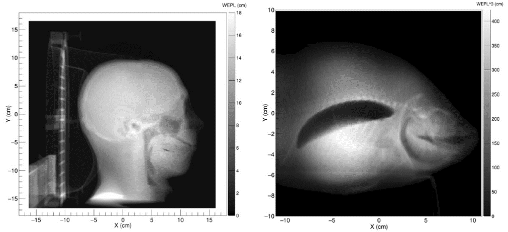
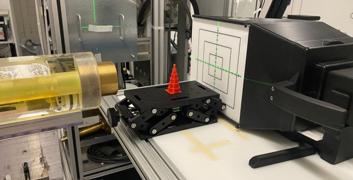
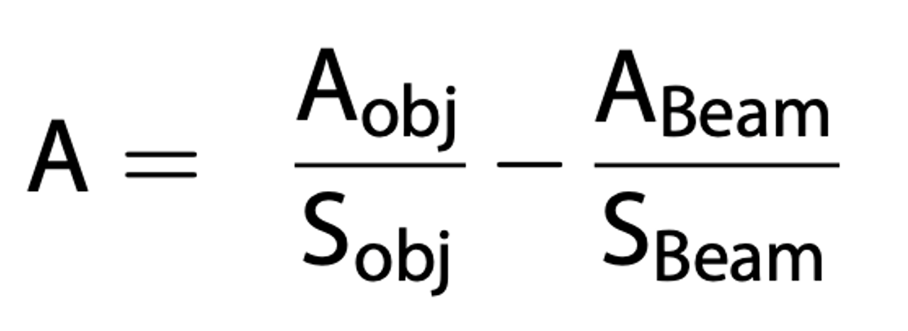
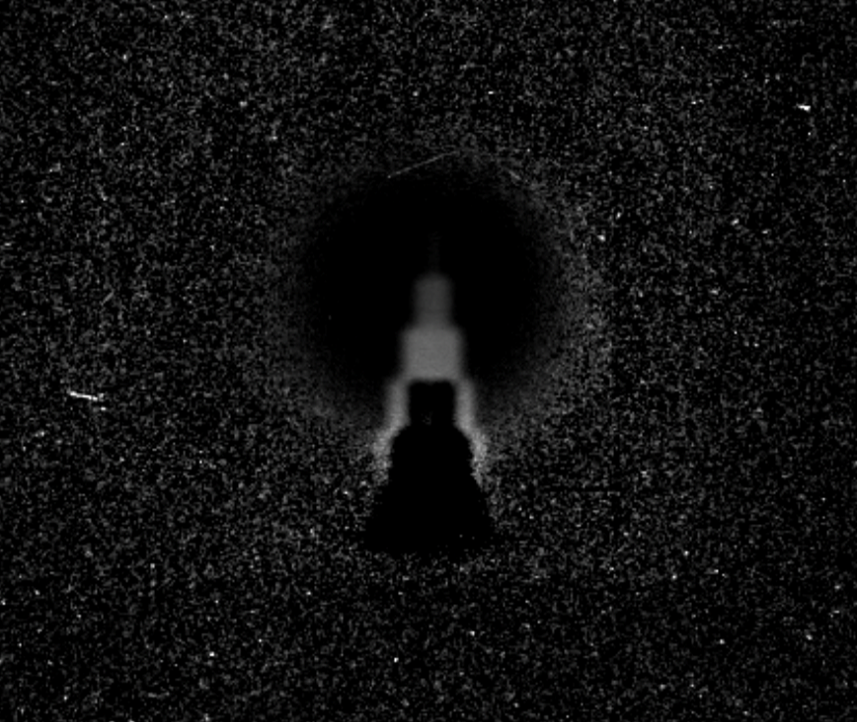

1. The images shown below are examples of proton radiographs. They are images captured using protons instead of traditionally used x-rays.
2. This image shows my experimental set-up to capture a proton radiograph. The yellow tube on the left-side of the below image is a proton beamline, where the proton beam is emitted. The red 3D-printed tower is the object being imaged. The large instrument on the far-right of the image is a scintillator detector that detects the protons that reach its surface and have travelled through the object. The invisible proton beam is turned into visible light at the white surface, and a camera within the detector captures an image of the now visible proton beam. A laptop is connected to the detector and software is used to acquire and analyze the proton beam images.
3. To acquire a single radiograph of the object, it was necessary to capture four separate images in different imaging modes and then process these images together. The equation displayed below shows how the images were processed together, where each term in the equation represents one of the four images. I used MATLAB to perform this image arithmetic and acquire a proton radiograph of my object.
4. The below image is the final proton radiograph of the object. It provides information about the radiological thickness of the object as well as the structure. From my results and other researchers' results, it appears that proton radiography may be used as an imaging method for planning proton therapy.
